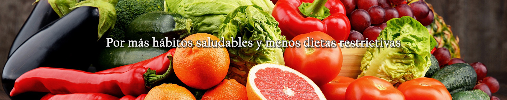
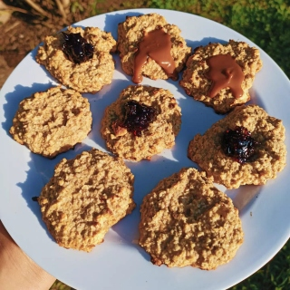
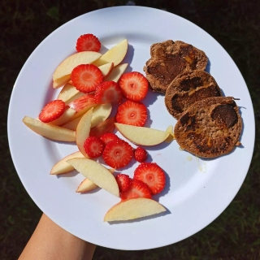
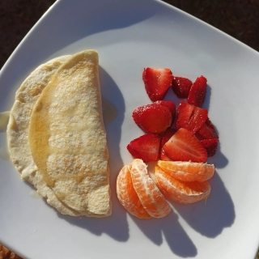
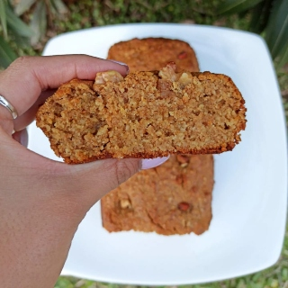
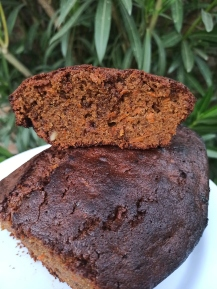
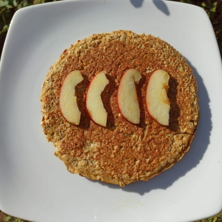

Recetario dulce y salado

Galletitas/Pepas de avena:
Ingredientes:
- 1 banana
- 1 huevo o 2 claras
- ½ cucharada de miel
- 1 cucharada de pasta de mani
- 1 taza de avena
- 1 un puñado de frutos secos(5-8)
Procedimiento:
- Pisar la banana
- Agregar el huevo, miel y pasta de maní. Mezclar
- Incorporar avena y frutos secos. Mezclar
- Dar forma de galletitas o pepas con el hueco en el centro
- Hornear durante 15 minutos a 180-200 grados
- Rellenar las pepas con: mermelada light, dulce de leche, dulce de membrillo o batata
Porción: 3 galletitas

Pancakes de cacao amargo:
Ingredientes:
- 2 cucharadas soperas de harina integral
- 1 cucharada sopera de cacao amargo
- 1 cucharadita de polvo de hornear
- 1 huevo o 2 claras
- 1 sobre de edulcorante
- 1 chorrito de esencia de vainilla
Procedimiento:
- Precalentar una sartén con un poquito de aceite o rocío vegetal
- Mezclar todos los ingredientes
- Verter la mezcla en la sartén y formar los pancakes del tamaño que quieras
- Cocinar de ambos lados
- Servir y acompañar con las frutas que más te gusten
Porción: 2 unidades medianas o 3 chicas

1 cucharada de harina de coco (o la que tengas)
2 claras o 1 huevo
1 sobre de edulcorante
Esencia de vainilla
Panqueque de harina de coco
Ingredientes:
Procedimiento:
- Batir los huevos con la esencia y el edulcorante
- Agregar harina de coco
- Mezclar todo
- Colocar la preparación en una sartén con aceite o rocío vegetal a fuego lento y cocinar de ambos lados
- Acompañar con frutas
Porción: 1 unidad

Budin integral de banana:
Ingredientes:
- 100 g de avena o harina de avena
- 200 g de harina integral
- 2 huevos
- 1 banana
- ½ taza de leche descremada
- 1/3 taza de aceite
- 1 ½ cucharada sopera de polvo de hornear
- Azúcar mascabo 4 cucharadas o 4-5 sobres de edulcorante
- Ralladura de 1 limón grande
- 1 cucharada de miel (opcional)
Procedimiento:
- Batir los huevos y azúcar hasta que espume
- Agregar aceite, miel, ralladura de limón, leche y banana. Mezclar
- Incorporar el polvo de hornear, avena (harina de avena) y harina integral
- Colocar la preparación en una budinera previamente aceitada y llevar a horno precalentado a 180 grados durante 45 minutos aproximadamente o hasta que pinches con un cuchillo y salga limpio
Porción: 2 rodajas finas o una grande

Budin de zanahoria:
Ingredientes:
- 150 g de harina integral
- 50 g de harina leudante
- 125cc de aceite neutro
- 1 cucharada sopera de polvo de hornear
- 200 g de azúcar mascabo o 150 g de azúcar común
- 3 huevos
- 250 g de zanahoria rallada (1 grade + 1 chica)
- Esencia de vainilla
- 50 g de nueces
- 1 pizca de sal
Procedimiento:
- Mezclar los huevos, aceite, esencia de vainilla y azúcar
- Incorporar el polvo de hornear, sal y harina
- Agregar la zanahoria rallada y nueces
- Colocar la preparación en una budinera o savarín previamente aceitado
- Cocinar en horno precalentado a 180 grados durante 45-50 minutos aproximadamente o hasta que pinches con un cuchillo y salga limpio
Porción: 2 rodajas finas o una rodaja grande

Tortilla de avena y manzana:
Ingredientes:
- ½ taza de avena
- 1 manzana rallada
- 2 huevos y 1 clara, o 2 claras y 1 huevo
- 1 cucharada de miel o 1 sobre de edulcorante
Procedimiento:
- Batir los huevos y la miel o edulcorante
- Agregar la manzana rallada. Mezclar
- Incorporar la avena. Mezclar
- Cocinar en una sartén con rocío vegetal o muy poco aceite a fuego mínimo de ambos lados.